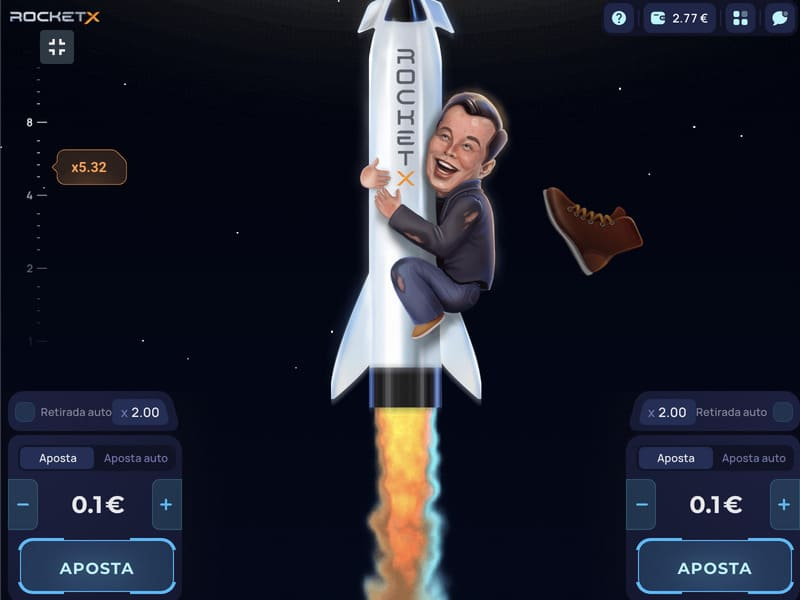
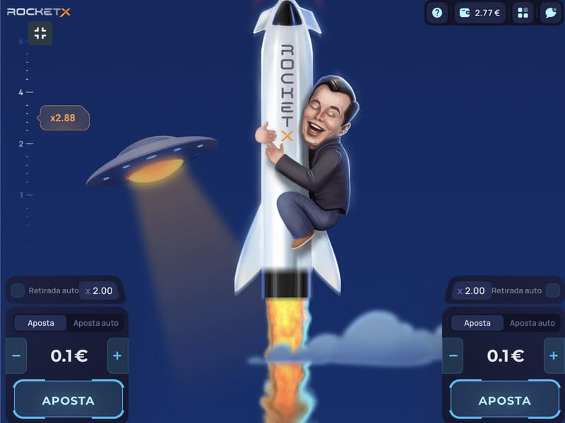
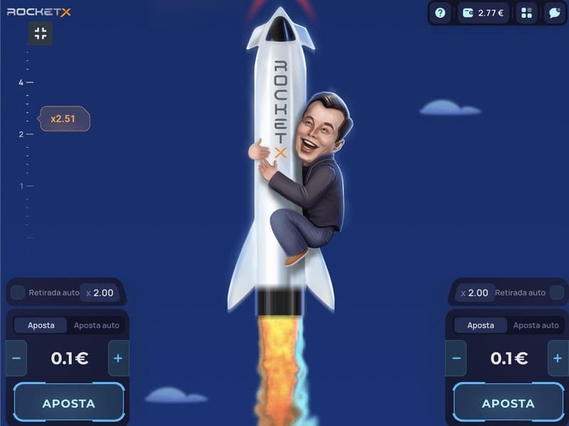
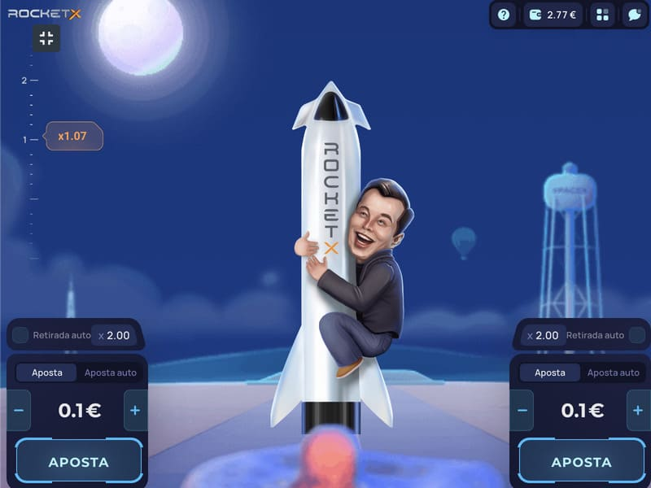
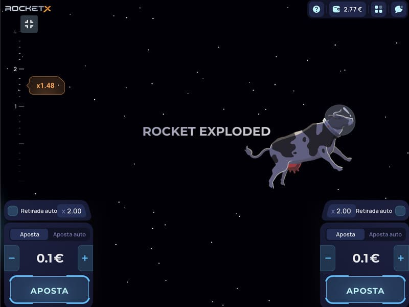
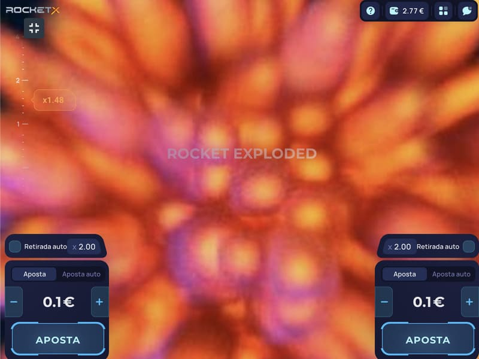

Jogar Rocket X num casino online
A coleção de top crash games é completada pelo jogo original Rocket X. O desenvolvimento 1Play proporciona um ciclo de jogo simples com múltiplas escolhas estratégicas para os jogadores. As rondas são dinâmicas e podem ser observadas simplesmente analisando os resultados de outros jogadores ou participar à vontade.
É um jogo multi jogador em que apenas o participante decide quando terminar uma ronda. Tais decisões tornam possível estar satisfeito com ganhos mínimos ou apontar para uma grande pontuação, experimentando emoções encantadoras quando se joga Rocket X.
Razões para a popularidade do Rocket X
A popularidade do Rocket X tem muitas vantagens:
Cabe aos jogadores decidir quando devem retirar os seus ganhos. É possível obter o prémio mínimo e perder a hipótese de ganhar o grande prémio. Cada ronda é um desconhecido, aumentando a excitação.
O programa de acumulação funciona num sistema Provably Fair, que varia os totais com base em combinações selecionadas aleatoriamente e apostas dos jogadores. A transparência dos totais pode ser verificada em qualquer altura utilizando a janela correspondente nas definições.
O desenvolvimento assemelha-se ao popular Aviator, o Jet X, mas difere no enredo e em algumas características. É ideal para mudar a jogabilidade, desenvolvendo novas estratégias para uma melhor possibilidade de ganhar grandes lucros.
O valor mais alto que pode ser enrolado não é fixo. Para ganhos significativos, um multiplicador de x100 ou superior será suficiente. Conforme os testes, uma vez em cada hora e meia é lançado um valor aproximado, e até consideravelmente mais.
As opções de jogo do Rocket X permitem a análise das rondas anteriores, uma vez que os resultados são registados numa tabela. Os jogadores têm acesso à história de várias dezenas de rondas, o que é bastante informativo para analisar e tomar as decisões corretas.
No lado positivo, há um painel de apostas simples à esquerda ou, no fundo, dependendo do aparelho que sê utilizado. O foguetão X pode ser jogado a partir de PCs, computadores portáteis, tablets e telemóveis. O painel mostra os valores All, My, Top Bet. Pode ver os ganhos e as probabilidades dos outros participantes, tomando um longo período — mês, ano. Utilizando o sala de conversação no jogo, os jogadores podem comunicar entre si, partilhar sucessos, estratégias, recomendações.
Como jogar e ganhar no Rocket X
A trama do Rocket X é sobre um foguetão a que um jovem se agarra, apreciando realisticamente o voo. O jogador precisa de fazer apostas entre 0,1 e 140 créditos. É possível colocar dois tipos de valores, aumentando as hipóteses de ganhar. O jogo contém várias funções adicionais para personalização:
É necessário definir determinadas probabilidades, ativar a função e esperar resultados. É uma ótima opção para passar tempo com as suas próprias táticas vencedoras.
A seguir, realiza-se o lançamento. A ronda prossegue espetacularmente com um trilho de foguetes coloridos e um multiplicador crescente. Em qualquer momento, a menos que a retirada automática seja definida, o jogador determinará o total. O cashout é opcional, mas quanto mais alto a probabilidades, quanto maior for a acumulação de prémios. A peculiaridade é que, perseguindo o maior Jackpot, há riscos consideráveis de perder a aposta. A capacidade de parar a tempo, bem como a utilização de várias estratégias e táticas, leva a rondas vencedoras.
Estratégias e táticas no Rocket X
Há muitas estratégias eficazes, que o Rocket X pode experimentar gratuitamente, executando uma versão de demonstração. Algumas das táticas mais populares incluem o seguinte:
O minimalismo está mais preocupado com o valor do multiplicador. Os jogadores precisam de retirar os seus ganhos assim que o número multiplicador entrar no intervalo de x1,5 a x1,8. Ninguém garante grandes Jackpots, mas os pequenos ganhos serão muitas vezes no bolso.
O intervalo multiplicador neste caso é de x2 a x3. Os jogadores notam uma sorte bastante frequente de 40-50%, o que vale bem a decisão e torna possível ganhar de volta após tentativas fracassadas.
Expectativa de um multiplicador de x100 ou superior. Após análise da maioria dos comentários dos jogadores, pode concluir-se que o multiplicador elevado sai uma vez por hora e meia, em média. Uma vez que existe aqui uma história de resultados, é bastante realista observar os totais e tirar as conclusões certas aplicando apostas elevadas num determinado momento.
Não existe uma única estratégia vencedora, uma vez que o jogo funciona num sistema de aleatoriedade. Há muitas maneiras de abordar o favor da Lady Fortune. É também importante ter em mente o limite estabelecido e passar o tempo não o excedendo.
O objetivo de jogar Rocket X
Tocar Rocket X tem tudo a ver com diversão e orçamentação. Uma vez que o utilizador tenha escolhido os seus objetivos, precisa de carregar em Start ou Demo. Ao fazer apostas com dinheiro real, é bastante realista ficar sempre no preto, o que é comprovado pelas inúmeras críticas positivas dos jogadores. A elevada percentagem de pagamento é outra confirmação da rentabilidade da jogabilidade.
Onde jogar Rocket X
Para os fãs de jogos de choque, o Rocket X será uma agradável surpresa. Então, onde tentar jogar o Rocket X? No nosso sítio web encontrará uma lista de casinos online verificados que fornecem uma versão licenciada do jogo Rocket X. Fique descansado que qualquer um dos casinos abaixo listados é não interferente e garante os pagamentos dos seus ganhos. Se decidir jogar Rocket X, então siga as hiperligações para os sítios web de casinos online verificados e comece a jogar.